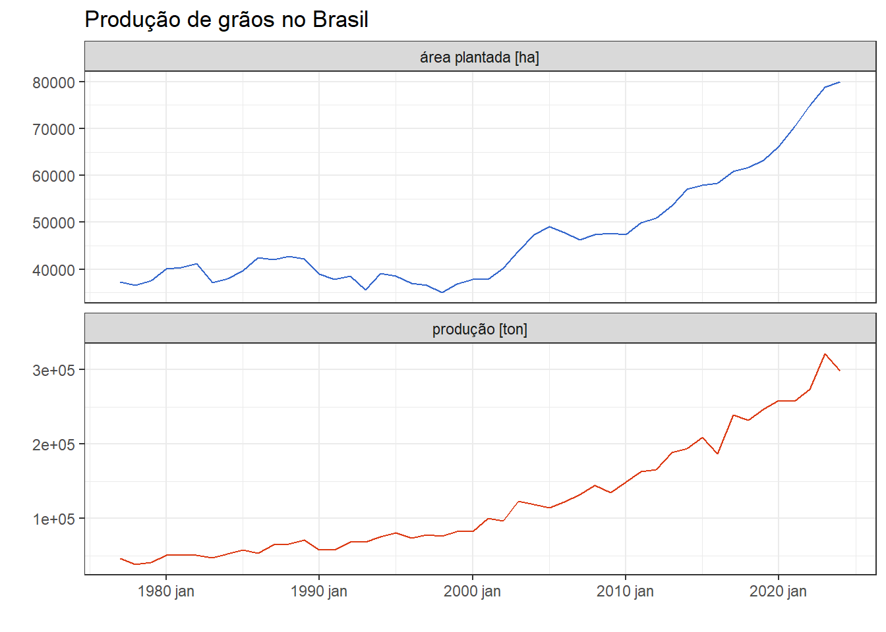
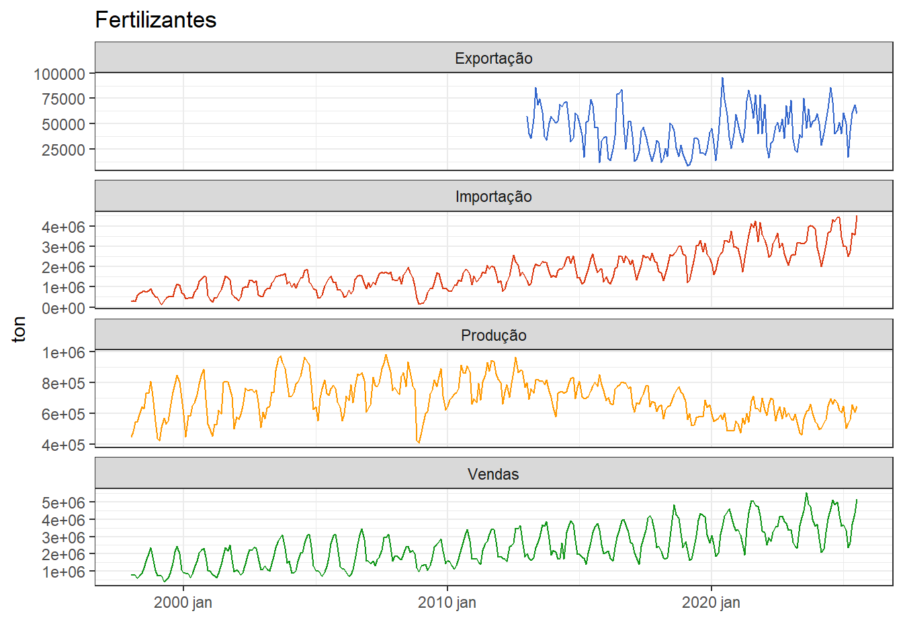
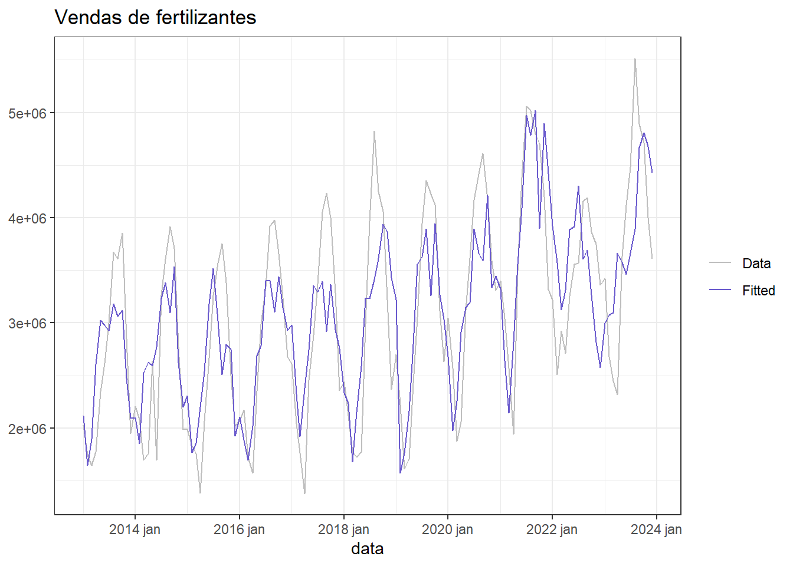
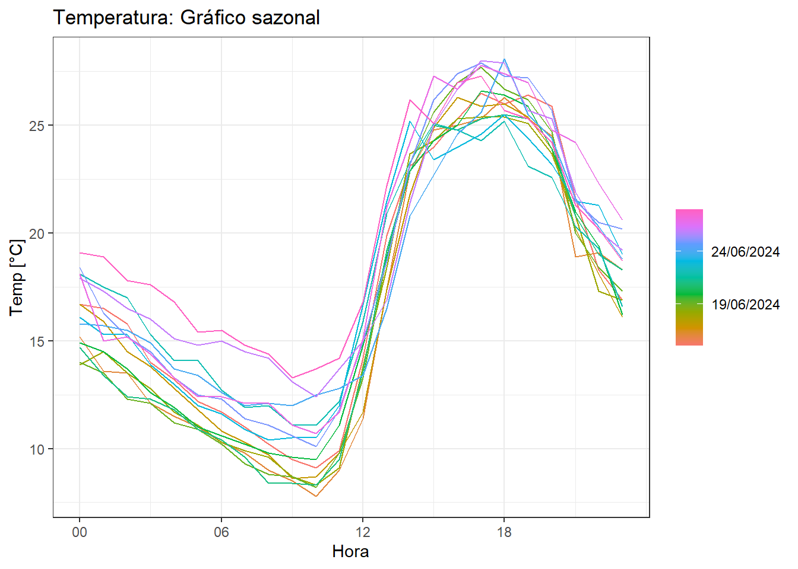
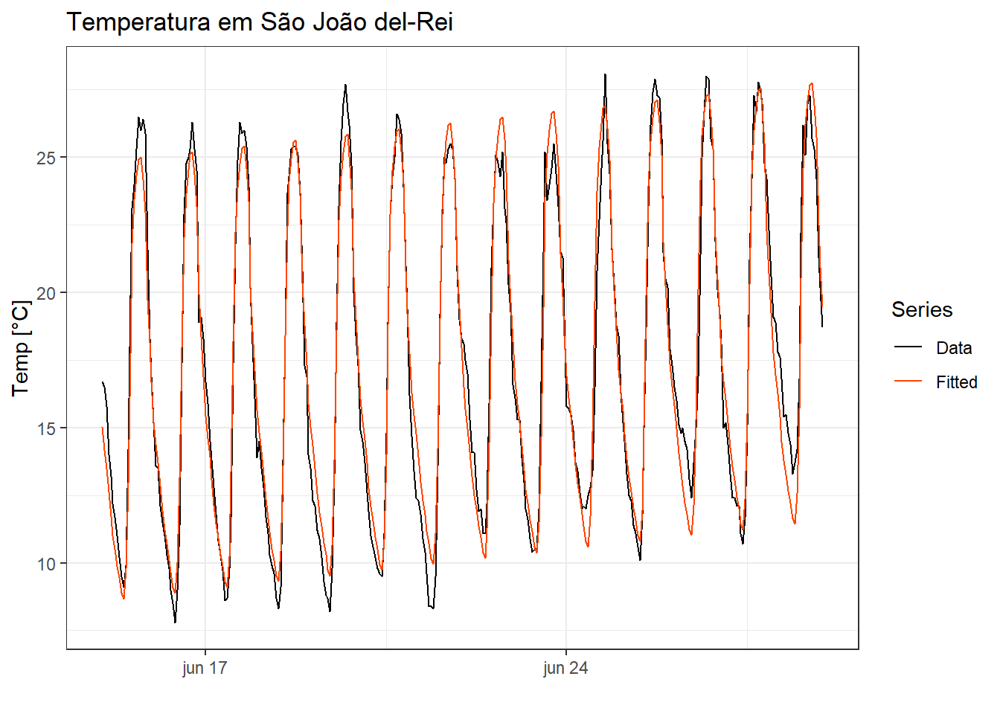

4 Regressão de séries temporais
4.1 Regressão linear simples
A regressão de séries temporais visa modelar uma série de interesse, dita dependente, em função de outra ou mais séries, referidas como independentes, às quais são supostamente relacionadas. Os métodos mais tradicionais consideram a dependência temporal da própria série para modelagem e previsão. Entretanto, em situações onde há séries relacionadas disponíveis a regressão pode ser útil. Ademais, há possibilidade de combinar a regressão com modelos autoregressivos integrados de m[edias móveis, conforme será abordado no capítulo 7.
Seja um problema onde deseja-se prever uma série temporal contínua, \(y_1, y_2, ..., y_T\), em função de outra, \(x_1, x_2, ..., x_T\).
Na Figura 7.6 são plotadas as séries temporais anuais de área plantada em hectare e grãos produzidos em toneladas no Brasil de 1977 a 2022, Ipeadata. As séries apresentam tendência de crescimento não linear com algumas flutuações.
Ao plotar um diagrama de dispersão entre as séries, pode-se observar uma correlação linear positiva alta entre estas, conforme Figura 4.2.

Conforme observado na Figura 4.3, pode-se considerar neste caso e em diversos outros a aproximação de uma função linear para tal relação.
O modelo linear plotado em azul pode ser descrito conforme a Equação 4.1, onde \(\beta_0\) é uma constante e \(\beta_1\) é um coeficiente linear.
\[ \hat{y}_t = \beta_0+\beta_{1}x_t \tag{4.1}\]
As observações da série dependente ou resposta, \(y_t\), podem ser descritas conforme Equação 4.2, como sendo o valor estimado, \(\hat y_t\), adicionado de um termo de erro ou resíduo, \(\varepsilon_t\).
\[ \begin{aligned} y_t = \hat{y}_t + \varepsilon_t \\ y_t = \beta_0 + \beta_1x_t + \varepsilon_t \\ \end{aligned} \tag{4.2}\]
Considerando as \(T\) observações disponíveis das séries, \((x_1, y_1), (x_2, y_2), ..., (x_T, y_T)\), pode-se pensar em um modelo que minimize os erros de previsão. Uma vez que o erro é normalmente distribuído, com média nula e variância \(\sigma_\varepsilon^2\), \(\varepsilon \sim N(0,\sigma_\varepsilon^2)\), pode-se trabalhar a minimização da soma dos quadrados dos erros de previsão, \(\sum_{t=1}^{T}\varepsilon_t^2\). A Figura Figura 4.4 plota em linhas vermelhas verticais os resíduos. O modelo plotado minimiza a soma dos quadrados dos erros.
A análise à seguir expõe os coeficientes do modelo estimado com teste t para significância destes. Neste curso não será dada ênfase na inferência, mas na previsão. De forma simples um valor t com alta magnitude ou um p-valor (Pr(>|t|)) baixo indica risco baixo de rejeitar a hipótese nula de ausência de efeito da variável ou série independente (\(x_t\)).
Series: producao
Model: TSLM
Residuals:
Min 1Q Median 3Q Max
-40729 -18733 1072 18188 35065
Coefficients:
Estimate Std. Error t value Pr(>|t|)
(Intercept) -1,726e+05 1,248e+04 -13,84 <2e-16 ***
area_plantada 6,285e+00 2,561e-01 24,54 <2e-16 ***
---
Signif. codes: 0 '***' 0,001 '**' 0,01 '*' 0,05 '.' 0,1 ' ' 1
Residual standard error: 21080 on 46 degrees of freedom
Multiple R-squared: 0,929, Adjusted R-squared: 0,9275
F-statistic: 602,2 on 1 and 46 DF, p-value: < 2,22e-16O modelo para prever a produção de grãos, \(y_t\), em função da área plantada, \(x_t\), fica:
\[ \hat{y}_t = -1,726 \times 10^{5} + 6,285x_t \]
4.2 Regressão linear múltipla
No caso de onde há múltiplas séries exógenas ou regressoras de interesse, \(x_{t1}, x_{t2}, ..., x_{tk}\), onde \(k\) é o número de séries consideradas para estimar \(y_t\), pode-se considerar o modelo com um coeficiente linear associado a cada variável, conforme Equação 4.3.
\[ \hat{y}_t = \beta_0 + \beta_1x_{t1} + \beta_2x_{t2} + \cdots + \beta_kx_{tk} = \beta_0 + \sum_{j=1}^{k}\beta_jx_{tj}, \tag{4.3}\]
ou de forma matricial segundo Equação 4.4, com \(\mathbf{X}_{[T\times (k+1)]}\) e \(\mathbf{\beta}_{[(k+1) \times 1]}\):
\[ \begin{aligned} \hat{\mathbf{y}} = \mathbf{X}\mathbf{\beta} \end{aligned}, \tag{4.4}\]
onde a matrix \(\mathbf{X}\) contém uma coluna unitária para a constante e uma coluna para cada série independente:
\[ \mathbf{X} = \begin{bmatrix} 1 & x_{11} & x_{12} & \cdots & x_{1k}\\ 1 & x_{21} & x_{22} & \cdots & x_{2k} \\ \vdots & \vdots & \vdots & \ddots & \vdots\\ 1 & x_{T1} & x_{T2} & \cdots & x_{Tk} \\ \end{bmatrix}, e\\ \]
e \(\beta\) consiste no vetor de coeficientes:
\[ \mathbf{\beta}^T = \begin{bmatrix} \beta_0 & \beta_1 & \cdots & \beta_k\\ \end{bmatrix}. \\ \]
Os valores observados da série \(\mathbf{y}\) podem ser recuperados somando os valores preditos e o erro, conforme Equação 4.5.
\[ \begin{aligned} \mathbf{y} = \mathbf{X}\mathbf{\beta} + \mathbf{\varepsilon} \end{aligned} \tag{4.5}\]
Tomando tal notação, a soma dos quadrados dos erros pode ser descrita como \(\sum_{t=1}^{T}\varepsilon_t^2 = \mathbf{\varepsilon}^T\mathbf{\varepsilon}\). Desenvolvendo tal expressão tem-se:
\[ \begin{aligned} L(\mathbf{\beta}) = \mathbf{\varepsilon}^T\mathbf{\varepsilon} = (\mathbf{y} - \mathbf{X}\mathbf{\beta})^T(\mathbf{y} - \mathbf{X}\mathbf{\beta}) \\ \mathbf{y}^T\mathbf{y} - 2\mathbf{\beta}^T\mathbf{X}^T\mathbf{y} + \mathbf{\beta}^T\mathbf{X}^T\mathbf{X}\mathbf{\beta} \end{aligned} \]
Para minimizar \(L\) em relação à estimativa de \(\mathbf{\beta}\), pode-se diferenciar tal quantidade em relação à \(\mathbf{\beta}\) e igualar a zero:
\[ \begin{aligned} \frac{\partial L}{\partial \mathbf{\beta}} = -2\mathbf{X}^T\mathbf{y} + 2\mathbf{X}^T\mathbf{X}\mathbf{\beta} = 0 \\ \end{aligned} \]
As estimativas dos coeficientes \(\hat\beta\) obtidas segundo a Equação 4.6 minimizam a soma dos quadrados dos resíduos, \(\sum \varepsilon_i^2\), sendo, portanto, as estimativas de mínimos quadrados.
\[ \hat{\mathbf{\beta}} = (\mathbf{X}^T\mathbf{X})^{-1}(\mathbf{X}^T\mathbf{y}) \tag{4.6}\]
Seja a série multivariada de exportação, importação, produção e vendas de fertilizantes no Brasil, plotada na Figura 4.5, disponível em Ipeadata. A série tem frequência mensal e possui dados a partir de 1998, exceto para a de exportação, disponível a partir de 2013. Observa-se um volume muito maior de importações que produção e exportações, além de sazonalidade. As séries de importação e vendas apresentam padrão de crescimento.

Observa-se na Figura 4.6 diagramas de dispersão e correlações aos pares para os dados a partir de 2013. Há correlação positiva mais significativa entre as séries de vendas e importação. A partir de 2013, a queda na produção é acompanhada do aumento nas importações, o que justifica a correlação negativa.
Seja um modelo de regressão para prever a venda de fertilizantes em função das outras séries a partir de 2013. A seguir apresenta-se tal modelo. Apenas a série de exportações não foi significativa.
Series: vendas
Model: TSLM
Residuals:
Min 1Q Median 3Q Max
-1342150 -397913 32404 402134 1619150
Coefficients:
Estimate Std. Error t value Pr(>|t|)
(Intercept) -8,085e+05 4,687e+05 -1,725 0,08690 .
producao 1,872e+00 5,821e-01 3,215 0,00165 **
importacao 1,099e+00 7,735e-02 14,210 < 2e-16 ***
exportacao -5,323e-01 2,742e+00 -0,194 0,84640
---
Signif. codes: 0 '***' 0,001 '**' 0,01 '*' 0,05 '.' 0,1 ' ' 1
Residual standard error: 585300 on 128 degrees of freedom
Multiple R-squared: 0,6446, Adjusted R-squared: 0,6363
F-statistic: 77,39 on 3 and 128 DF, p-value: < 2,22e-16O modelo obtido pode ser escrito conforme Equação 4.7, onde \(\hat y_t\) consiste na estimativa de vendas n período \(t\), \(x_{t1}\) consiste no volume produzido, \(x_{t2}\) no volume importado e \(x_{t3}\) no volume exportado no período \(t\).
\[ \hat y_t = -8,08\times10^5 + 1,87x_{t1} + 1,10x_{t2} -5,32x_{t3} \tag{4.7}\]
4.3 Desempenho do modelo de regressão
Uma forma de medir o ajuste do modelo obtido aos dados seria a partir do cálculo do coeficiente de determinação múltipla, \(R^2\), conforme a Equação 4.8,
\[ \begin{align} R^2 &= 1- SS_{E}/SS_T \\ R^2 &= 1- \frac{\sum_{t=1}^{T}(y_t-\hat{y}_t)^2}{\sum_{i=t}^{T}(y_y-\overline{y})^2} = 1- \frac{\sum_{t=1}^{T}\varepsilon_t^2}{\sum_{i=t}^{T}(y_y-\overline{y})^2}, \end{align} \tag{4.8}\]
onde \(SS_E\) consiste na soma dos quadrados dos erros e \(SS_T\) consiste na soma dos quadrados total, ou no numerador da variância da série a ser predita.
O \(R^2\) sempre aumenta ao se adicionar novos termos no modelo, mesmo se estes não são significativos, uma vez que não leva em conta os graus de liberdade no cálculo. O coeficiente de determinação múltipla ajustado, \(R^2_{aj}\), é uma métrica mais interessante, já que considera as médias dos quadrados ao invés das somas dos quadrados dos erros, conforme a Equação 4.9.
\[ \begin{align} R^2_{aj} &= 1- MS_{E}/MS_T \\ R^2_{aj} &= 1- \frac{\sum_{t=1}^{T}(y_t-\hat{y}_t)^2/(T-K-1)}{\sum_{t=1}^{T}(y_t-\overline{y})^2/(T-1)}, \end{align} \tag{4.9}\]
onde \(K\) é o número de termos no modelo, \(MS_E\) consiste média dos quadrados dos erros, que consiste na estimativa de variância dos resíduos, enquanto \(MS_T\) consiste na média dos quadrados total, ou na variância da série a ser predita.
Para o modelo de regressão simples para produção de grãos em função da área plantada foi obtido um ajuste de mais de 91%, garantindo tal percentual de explicação da variabilidade da série de produção em função da área plantada. A Figura 4.7 plota a série de produção de grãos observada e a aproximada pelo modelo de regressão.

A Figura 4.8 plota a série de vendas de fertilizantes observada e a aproximada pelo modelo de regressão múltipla.

4.4 Diagnóstico dos resíduos
A Figura 4.9 apresenta alguns gráficos dos resíduos do modelo de produção de grãos em função da área plantada. Pode-se observar que o primeiro gráfico apresenta tendências em alguns instantes, com padrão não aleatório, indicando presença de autocorrelação. O correlograma confirma presença de autocorrelação nos resíduos até a defasagem de 5 observações. Logo, há informação importante não capturada pelo modelo de regressão.

4.5 Preditores úteis
Muitas séries temporais costumam apresentar tendência linear. Um modelo linear simples pode considerar o tempo, \(t\), como preditor, de forma a modelar a tendência, conforme Equação 4.10.
\[ \hat{y}_t = \beta_0+\beta_{1}t \tag{4.10}\]
Pode-se também considerar variáveis dicotômicas ou binárias (dummy) para considerar a sazonalidade, feriados, ou algum evento especial. Por exemplo, para sazonalidade anual com uma série de frequência quadrimestral, pode-se considerar como variávis dummy as expostas na Tabela Tabela 4.1, com o modelo descrito na Equação 4.11. É importante observar que não é necessária a inclusão de todas variáveis dicotômicas no modelo, uma vez que se \(d_{2,t}=d_{3,t}=d_{4,t}=0\), então \(d_{1,t}=1\).
| Quadrimestre | \(d_{1,t}\) | \(d_{2,t}\) | \(d_{3,t}\) | \(d_{4,t}\) |
|---|---|---|---|---|
| Q1 | 1 | 0 | 0 | 0 |
| Q2 | 0 | 1 | 0 | 0 |
| Q3 | 0 | 0 | 1 | 0 |
| Q4 | 0 | 0 | 0 | 1 |
| Q1 | 1 | 0 | 0 | 0 |
| \(\vdots\) | \(\vdots\) | \(\vdots\) | \(\vdots\) | \(\vdots\) |
A Equação Equação 4.11 expõe o modelo de regressão com tais variáveis além do termo de tendência.
\[ \hat{y}_t = \beta_0+\beta_{1}t + \beta_2d_{2,t} + \beta_3d_{3,t} + \beta_4d_{4,t} \tag{4.11}\]
A Figura 4.10 exibe a série temporal de temperatura de São João del-Rei para os dias 15 a 28 de junho com frequência horária.

A Figura 4.11 expõe o gráfico sazonal da mesma série. Observa-se sazonalidade diária e uma tendência de crescimento, especialmente da temperatura mínima, para os dias considerados.

Um modelo de regressão considerando a tendência e sazonalidade para este caso deve considerar como variáveis dummy o dia, de forma a capturar a variação hora a hora. Logo, neste caso, 24 variáveis dummy são criadas. Observa-se que além da tendência a maior parte de tais variáveis apresenta significância e o modelo contempla mais de 95% de variabilidade da série.
Series: Temperatura
Model: TSLM
Residuals:
Min 1Q Median 3Q Max
-3,20212 -0,76300 -0,08292 0,87326 2,92845
Coefficients:
Estimate Std. Error t value Pr(>|t|)
(Intercept) 1,953e+01 3,454e-01 56,556 < 2e-16 ***
trend() 8,882e-03 6,822e-04 13,020 < 2e-16 ***
season()day2 -1,580e+00 4,573e-01 -3,456 0,000624 ***
season()day3 -3,053e+00 4,573e-01 -6,678 1,12e-10 ***
season()day4 -4,528e+00 4,575e-01 -9,897 < 2e-16 ***
season()day5 -5,372e+00 4,575e-01 -11,744 < 2e-16 ***
season()day6 -6,074e+00 4,574e-01 -13,278 < 2e-16 ***
season()day7 -6,933e+00 4,574e-01 -15,157 < 2e-16 ***
season()day8 -7,863e+00 4,574e-01 -17,191 < 2e-16 ***
season()day9 -8,579e+00 4,574e-01 -18,757 < 2e-16 ***
season()day10 -9,095e+00 4,574e-01 -19,886 < 2e-16 ***
season()day11 -9,726e+00 4,574e-01 -21,265 < 2e-16 ***
season()day12 -1,016e+01 4,573e-01 -22,206 < 2e-16 ***
season()day13 -1,074e+01 4,573e-01 -23,491 < 2e-16 ***
season()day14 -1,095e+01 4,573e-01 -23,949 < 2e-16 ***
season()day15 -9,840e+00 4,573e-01 -21,517 < 2e-16 ***
season()day16 -6,699e+00 4,573e-01 -14,648 < 2e-16 ***
season()day17 -1,900e+00 4,573e-01 -4,156 4,20e-05 ***
season()day18 2,148e+00 4,573e-01 4,697 3,97e-06 ***
season()day19 3,775e+00 4,573e-01 8,255 4,39e-15 ***
season()day20 4,637e+00 4,573e-01 10,141 < 2e-16 ***
season()day21 5,221e+00 4,573e-01 11,418 < 2e-16 ***
season()day22 5,298e+00 4,573e-01 11,586 < 2e-16 ***
season()day23 4,461e+00 4,573e-01 9,755 < 2e-16 ***
season()day24 3,252e+00 4,573e-01 7,111 7,93e-12 ***
---
Signif. codes: 0 '***' 0,001 '**' 0,01 '*' 0,05 '.' 0,1 ' ' 1
Residual standard error: 1,21 on 311 degrees of freedom
Multiple R-squared: 0,961, Adjusted R-squared: 0,958
F-statistic: 319,5 on 24 and 311 DF, p-value: < 2,22e-16Há uma tendência de aumento da temperatura nos dias considerados de 0,00888 °C por hora, ou 0,213°C por dia. Cada coeficiente das variáveis dummy expõe a diferença da respectiva hora em relação à primeira hora do dia. Por exemplo, às 6 da manhã a diferença de temperatura em relação a 1 da manhã é igual a -4.05°C. A Figura Figura 4.12 apresenta a série observada e a prevista pelo modelo de regressão.

A Figura 4.13 apresenta os valores previstos e observados plotados com as horas do dia separadas em cores distintas. Observa-se o excelente ajuste do modelo e a variação da temperatura segundo hora do dia.

4.6 Seleção de preditores
A Figura 4.14 exibe séries temporais de petróleo refinado e derivados produzidos no Brasil em \(m^3\), Dados estatísticos - Agência nacional de petróleo. O petróleo considera o volume nacional e importado.

A Figura 4.15 expõe um gráfico de correlação entre tais séries. As séries foram agrupadas segundo a magnitude e sinal das correlações. A série de petróleo refinado tem correlação positiva com asfalto, oléo diesel, outros não energéticos, querosene de avião, coque e gasolina e correlação negativa ou desprezível com as demais séries.

A seguir expõe-se um modelo de regressão múltipla do petróleo refinado em função do volume produzido dos derivados. Apenas GLP, coque, parafina e solvente não apresentaram significância estatística a 0,05 de significância.
Series: petroleo
Model: TSLM
Residuals:
Min 1Q Median 3Q Max
-728213 -101803 13923 108790 409621
Coefficients:
Estimate Std. Error t value Pr(>|t|)
(Intercept) 4,781e+05 1,720e+05 2,780 0,005800 **
GLP 4,487e-01 2,633e-01 1,704 0,089439 .
asfalto 1,044e+00 2,804e-01 3,724 0,000237 ***
coque 5,506e-01 3,585e-01 1,536 0,125750
gasolina 4,264e-01 9,076e-02 4,698 4,11e-06 ***
lubrificante 3,463e+00 1,037e+00 3,339 0,000954 ***
nafta 1,001e+00 1,421e-01 7,048 1,39e-11 ***
oleo_combustivel 9,055e-01 7,052e-02 12,841 < 2e-16 ***
oleo_diesel 1,138e+00 5,430e-02 20,960 < 2e-16 ***
outros_nao_energeticos 1,497e+00 2,916e-01 5,133 5,31e-07 ***
parafina 6,667e+00 3,943e+00 1,691 0,091924 .
querosene_aviao 1,409e+00 1,712e-01 8,230 6,99e-15 ***
querosene_iluminante 8,834e+00 2,943e+00 3,001 0,002929 **
solvente 1,358e+00 9,322e-01 1,456 0,146383
---
Signif. codes: 0 '***' 0,001 '**' 0,01 '*' 0,05 '.' 0,1 ' ' 1
Residual standard error: 176300 on 282 degrees of freedom
Multiple R-squared: 0,9503, Adjusted R-squared: 0,948
F-statistic: 414,9 on 13 and 282 DF, p-value: < 2,22e-16A seguir expõe-se um modelo de regressão múltipla excluindo os termos não significativos do modelo inicial. O modelo apresentou melhora no ajuste, com \(R^2_{aj} = 0,9558\).
Series: petroleo
Model: TSLM
Residuals:
Min 1Q Median 3Q Max
-657756 -91477 9494 92705 484690
Coefficients:
Estimate Std. Error t value Pr(>|t|)
(Intercept) 1,763e+06 1,956e+05 9,010 < 2e-16 ***
asfalto 9,308e-01 2,470e-01 3,768 0,000200 ***
gasolina 5,786e-01 7,556e-02 7,658 2,96e-13 ***
lubrificante 1,541e+00 9,571e-01 1,610 0,108587
nafta 6,184e-01 1,180e-01 5,238 3,15e-07 ***
oleo_combustivel 1,057e+00 6,619e-02 15,975 < 2e-16 ***
oleo_diesel 1,221e+00 3,998e-02 30,550 < 2e-16 ***
outros_nao_energeticos 9,912e-01 2,634e-01 3,763 0,000204 ***
querosene_aviao 1,546e+00 1,537e-01 10,058 < 2e-16 ***
querosene_iluminante -1,690e+00 2,792e+00 -0,605 0,545491
data -6,809e+01 8,892e+00 -7,658 2,96e-13 ***
---
Signif. codes: 0 '***' 0,001 '**' 0,01 '*' 0,05 '.' 0,1 ' ' 1
Residual standard error: 162500 on 285 degrees of freedom
Multiple R-squared: 0,9573, Adjusted R-squared: 0,9558
F-statistic: 639,7 on 10 and 285 DF, p-value: < 2,22e-16Geralmente, em regressão múltipla é interessante selecionar um modelo com os melhores preditores, de forma a melhorar a capacidade preditiva do modelo. Além do \(R^2_{aj}\), outras métricas podem ser usadas, por exemplo o critério de informação de Akaike, AIC. O AIC considera o número de parâmetros e o erro do modelo, sendo esta uma métrica mais interessante para seleção de modelos.
\[ AIC = T\text{ log}\bigg(\frac{SS_E}{T}\bigg)+2(k+2) \]
A Tabela 4.2 apresenta os resultados de AIC, AIC corrigido e \(R^2_{aj}\) para o modelo completo e o modelo reduzido. O modelo reduzido apresentou melhor resultado, uma vez que minimiza AIC e AICc.
| model | adj_r_squared | AIC | AICc |
|---|---|---|---|
| completo | 0,9480198 | 7167,001 | 7168,715 |
| reduzido | 0,9558487 | 7115,814 | 7116,917 |
A forma correta de realizar a remoção de coeficientes, não é considerando a significância. Ademais, não sugere-se a remoção manual de coeficientes. Recomenda-se o uso de um algoritmo para tal fim. O algoritmo stepwise com eliminação para trás segue os seguintes passos:
- Comece com o modelo completo.
- Remova um preditor por vez. Mantenha o modelo com melhor desempenho, considerando por exemplo o AIC.
- Repita o procedimento até encontrar o melhor modelo.
4.7 Previsão
A previsão à frente não é geralmente possível quando se considera outras séries como preditoras, uma vez que não se conhece os valores futuros das séries. Por exemplo, no último caso do petróleo e derivados, os derivados vêm depois, sendo mais útil para previsão do volume refinado um modelo que considere ou a decomposição ou outros métodos mais sofisticados ainda não abordados, os quais levam em conta a autocorrelação da série. Entretanto, nos casos de regressão onde se utiliza como preditores a tendência e a sazonalidade a partir de variáveis dummy, é possível realizar a previsão à frente. A Figura 4.16 expõe a previsão de dois dias à frente para a temperatura de São joão del-Rei utilizando o modelo anteriormente obtido.

Apesar de não ser possível realizar previsões à frente para casos de regressão considerando outras séries temporais como preditoras, é possível realizar nestes casos previsões baseadas em cenários. Seja o caso exposto anteriormente onde deseja-se prever a venda de fertilizantes. A ?fig-prev_cenar expõe a previsão para dois cenários, um de aumento e outro de decréscimo nos índices de produção de bens de capital e intermediários. Este tipo de análise pode ser útil para adiantar possíveis cenários e viabilizar ações de planejamento.
4.8 Regressão não linear
Transformações podem ser interessantes para tratar a não lineariedade na série a ser predita e nas preditoras. Há muitos casos que a tendência observada em uma série não é linear. Nestes casos podem ser considerada transformação polinomial na tendência.
Uma opção interessante em alguns casos é utilizar transformação logarítimica em ambas séries independentes e dependente ou em apenas uma destas. Para o caso simples, com transformação em ambas as séries, tem-se o seguinte modelo.
\[ \text{log} (y_t) = \beta_0+\beta_1\text{log} (x_t) \]
Pode-se pensar em considerar um termo quadrático ou de ordem maior para a tendência, de forma a contemplar uma tendência não linear. Entretanto, não se recomenda tal estratégia, uma vez que na maioria dos casos a previsão resultante extrapola muito a realidade.
\[ \hat{y}_t = \beta_0+\beta_{1}t+\beta_{2}t^2 \]
Uma abordagem mais interessante é pensar em modelos lineares por partes, de forma a considerar modelos lineares distintos em cada parte do horizonte temporal da série, consistindo em um modelo não linear formado por peças lineares (piecewise regression). Por exemplo, um modelo com uma divisão no tempo, \(\tau\), ´pode ser descrito conforme segue:
\[ \hat{y}_t = \beta_0+\beta_{1}t+\beta_{2}(t-\tau)_+, \] onde:
\[ (t-\tau)_+ = \bigg\{ \begin{align} 0 \text{, se } t< \tau \\ t-\tau \text{, se } t\geq \tau \end{align} \]
Na Figura 4.18 é exibida a série temporal de emissões de gases de efeito estufa devido a produção de energia no Brasil. Os dados tem frequência anual e são disponibilizados desde 1990 até 2020 em SIRENE - Sistema de Registro Nacional de Emissões. As emissões são disponibilizadas em giga gramas (Gg) de dióxido de carbono equivalente. Observa-se tendência de aumento até 2014 e queda a partir de então.
A Figura 4.19 expõe a mesma série com três modelos, um com transformação logarítimica na resposta, resultando em um modelo exponencial, um modelo linear e outro linear por partes (piecewise). Para os três modelos foram utilizados dados de até 2017 para treinamento. Para o modelo por partes foram consideradas duas partições, em 2005 e 2014. Foi realizada a previsão para 5 anos a partir de 2018. Pode-se observar que o terceiro caso parece mais interessante pois ajusta-se melhor à queda observada nos últimos anos.
4.9 Implementação em R
A seguir são apresentadas boa parte das implementações na linguagem R para obter os dados, gráficos e análises expostos no presente capítulo.
Carregando pacotes.
Séries temporais anuais de área plantada em hectare e grãos produzidos em toneladas. O pacote ipeadatar disponibiliza diversas séries econométricas via função ipeadata.
# metadata("DEPAE_SAFRA")
# available_series()graos_plan <- ipeadata("DEPAE_SAFRAAREA")
graos_prod <- ipeadata("DEPAE_SAFRA")Transformando as séries em tsibble.
graos <- tsibble(valor = c(graos_plan$value,
graos_prod$value),
data = yearmonth(c(graos_plan$date,
graos_prod$date)),
id = c(rep("area_plantada", nrow(graos_plan)),
rep("producao", nrow(graos_prod))),
key=id, index=data)
id.labs <- c("área plantada [ha]", "produção [ton]")
names(id.labs) <- c("area_plantada", "producao")Visualizando as séries.
graos |> autoplot(valor) +
# geom_line(col = "slategrey") +
facet_wrap(nrow=2, ~ id, scales = "free_y",
labeller = labeller(id = id.labs)) +
guides(colour = "none") +
labs(y = "", x = "", title = "Produção de grãos no Brasil")Diagrama de dispersão e correlação entre as séries.
df_graos <- graos |>
pivot_wider(names_from=id,
values_from=valor)
ggpairs(df_graos, columns = 2:3)Modelo de regressão linear simples para produção em função da área plantada. Deve-se usar o comando TSLM. O modelo deve conter a série dependente e as indepndentes após ~. Neste caso há uma única série independente ou exógena, area_plantada. Porém, em casos onde há múltiplas séries exógenas, é importante usar + para separá-las.
fit_graos <- df_graos |>
model(TSLM(producao ~ area_plantada))
report(fit_graos)Série ajustada para produção de grãos a partir do modelo de regressão obtido.
augment(fit_graos) |>
ggplot(aes(x = data)) +
geom_line(aes(y = producao, colour = "Data")) +
geom_line(aes(y = .fitted, colour = "Fitted")) +
labs(y = "Grãos [ton]",
title = "Produção de grãos"
) +
scale_colour_manual(values=c(Data="grey",Fitted="slateblue")) +
guides(colour = guide_legend(title = NULL))Resíduos para o modelo de produção de grãos.
fit_graos |> gg_tsresiduals()Série temporal de temperatura de São João del-Rei.
tempo_sjdr <- read.csv("sjdr2024.csv",
header=T)
tempo_sjdr_ts <- tempo_sjdr |>
mutate(Data = as.POSIXct(paste(Data,Hora),
format = "%Y/%m/%d %H")) |>
select(!Hora) |>
as_tsibble(index = Data)data_inicial <- as.POSIXct("2024-06-15 00:00:00")
datas_especificas <- seq(from = data_inicial, by = "hour", length.out = 14*24)
tempo_sjdr_14_dias <- tempo_sjdr_ts |>
filter(Data %in% datas_especificas)Modelo de regressão com termo de tendência e sazonalidade. São usados para tal os termos trend() e season(). O segundo cria as variáveis dummy necessárias para capturar a sazonalidade na regressão.
fit_tempo <- tempo_sjdr_14_dias |>
model(TSLM(Temperatura ~ trend() + season()))
report(fit_tempo)Série aproximada.
augment(fit_tempo) |>
ggplot(aes(x = Data)) +
geom_line(aes(y = Temperatura, colour = "Data")) +
geom_line(aes(y = .fitted, colour = "Fitted")) +
scale_colour_manual(
values = c(Data = "black", Fitted = "orangered")
) +
guides(colour = guide_legend(title = "Series")) +
labs(x = "", y = "Temp [°C]",
title="Temperatura em São João del-Rei")Previsão do tempo.
fc_tempo <- forecast(fit_tempo)
fc_tempo |>
autoplot(tempo_sjdr_14_dias) +
labs(
title = "Previsão do tempo para São João del-Rei",
y = "Temp [°C]"
)Série de produção de petróleo e derivados.
petro <- read.csv("petroleo_e_derivados.csv", header=T)
petro <- petro |> select(-c(gasolina_aviao,
outros_energeticos))petro_ts <- petro |>
pivot_longer(cols = petroleo:solvente) |>
mutate(data = as.Date(data, format="%m/%d/%Y"))
petro_ts <- petro_ts |>
as_tsibble(key = name,
index = data)petro_ <- petro_ts |>
pivot_wider(names_from=name,
values_from=value)petro_ts |> autoplot(value) +
facet_wrap(nrow=14, ~ name, scales = "free_y") +
guides(colour = "none")Correlação entre as séries. Usa-se o comando corrplot do pacote homônimo.
R <- cor(petro[,2:15])
corrplot(R, method = 'color', order = 'hclust', type = 'upper')Modelo de regressão múltipla da série de produção de petróleo em função dos derivados.
fit_petro <- petro_ |>
model(TSLM(petroleo ~ .-petroleo-data))
report(fit_petro)Série temporal de emissões de gases de efeito estufa por produção de energia no Brasil.
emissoes <- read.csv("emissoes.csv", header = T)
emissoes_ts <- emissoes |>
mutate(Ano = year(as.Date(paste(Ano,"01 01"), format = "%Y %m %d"))) |>
as_tsibble(index = Ano)Modelos com tendência linear, exponencial e de regressão por partes. Para o último deve-se definir os knots ou divisões e provê-los como argumento em trend.
knots <- year(as.Date(c("2005-01-01", "2014-01-01"), format="%Y-%m-%d"))
fit_trends <- emissoes_ts |>
filter_index(~"2017") |>
model(
linear = TSLM(Energia ~ trend()),
exponencial = TSLM(log(Energia) ~ trend()),
`linear por partes` = TSLM(Energia ~ trend(knots = knots))
)
fc_trends <- fit_trends |> forecast(h = 5)Visualizando a série com as previsões.
emissoes_ts |>
autoplot(Energia) +
geom_line(data = fitted(fit_trends),
aes(y = .fitted, colour = .model)) +
autolayer(fc_trends, alpha = 0.5, level = NULL) + labs(x="Ano", y="Gg de CO2e", title="Emissões de gases de efeito estufa na produção de energia no Brasil")4.10 Exercícios propostos
O código à seguir é utilizado para obter as séries de fertilizantes apresentadas neste capítulo.
fert_venda <- ipeadata("ANDA12_VFERTILIZ12")
fert_prod <- ipeadata("ANDA12_PFERTILIZ12")
fert_exp <- ipeadata("ANDA12_NPKFERTILIZ12")
fert_imp <- ipeadata("ANDA12_MFERTILIZ12")fert <- tsibble(valor = c(fert_venda$value,
fert_prod$value,
fert_exp$value,
fert_imp$value
),
data = yearmonth(c(fert_venda$date,
fert_prod$date,
fert_exp$date,
fert_imp$date
)),
id = c(rep("vendas", nrow(fert_venda)),
rep("producao", nrow(fert_prod)),
rep("exportacao", nrow(fert_exp)),
rep("importacao", nrow(fert_imp))),
key=id, index=data)
id.labs <- c("Vendas", "Produção", "Exportação", "Importação")
names(id.labs) <- c("vendas", "producao", "exportacao", "importacao")- Obtenha um modelo para prever o volume de vendas de fertilizantes em função dos volumes de produção, importação e exportação a partir de 2013 até o fim de 2023. Use
filter_index(~ "2023-12")para definir o horizonte de tempo. Use o modelovendas ~ producao + importacao + exportacaoemTSLM. Interprete o modelo obtido.
- Se algum termo não for significativo, refaça o modelo desconsiderando-o e compare os modelos obtidos.
- Obtenha um modelo para a venda de fertilizantes em função apenas da tendência e sazonalidade da própria série.
O código a seguir obtém \(R^2_{aj}\), AIC e AICc dos modelos (adapte os nomes dos três modelos, segundo seu código).
fit1 <- glance(fit_fert) |>
select(adj_r_squared, AIC, AICc)
fit2 <- glance(fit_fert2) |>
select(adj_r_squared, AIC, AICc)
fit3 <- glance(fit_fert3) |>
select(adj_r_squared, AIC, AICc)
bind_rows(fit1,fit2,fit3) |>
mutate(model = c("completo", "reduzido", "tredn+season")) |>
relocate(model)- Faça a análise de resíduos para o melhor modelo obtido.
- Compare a capacidade de previsão dos modelos considerando dados de janeiro de 2024 até maio de 2025 como dados de teste. Use o argumento
new_dataemforecaste forneça a série de 17 observações para os modelos que dependem das variáveis exógenas. Para o último modelo forneça apenash=17.
- Faça um modelo de regressão para a série de produção de bens de consumo duráveis em função da série de bens de capital e da série de bens intermediários. Interprete o modelo obtido.
- Faça a análise dos resíduos para o modelo obtido no exercício anterior. Interprete os resultados.
- Obtenha os valores ajustados e visualize-os junto à série de bens de consumo duráveis.
A seguir expõe-se o código para realizar a previsão baseada em cenários para o modelo de regressão para produção de grãos em função da área plantada. Foram considerados dois cenários: um de aumento na área plantada nos dois próximos anos com 82000 e 85000 hectares plantados; outro de queda na área plantada nos dois próximos anos com 75000 e 72000 hectares.
future_scenarios <- scenarios(
Aumento = new_data(df_graos, 2) |>
mutate(area_plantada = c(82000,85000)),
Queda = new_data(df_graos, 2) |>
mutate(area_plantada = c(75000, 72000)),
names_to = "Cenários")fc <- forecast(fit_graos, new_data = future_scenarios)
df_graos |>
autoplot(producao) +
autolayer(fc, level = 95) +
labs(title = "Previsão de cenários para produção de grãos", y = "")- Faça uma previsão de cenários usando o modelo de regressão para a série de produção de bens de consumo duráveis. Considere três meses à frente e um cenários de queda e outro de aumento nos índices de produção de bens de capital e da série de bens intermediários. A seguir expõe-se como seria implementado um cenário para este caso de regressão múltipla.